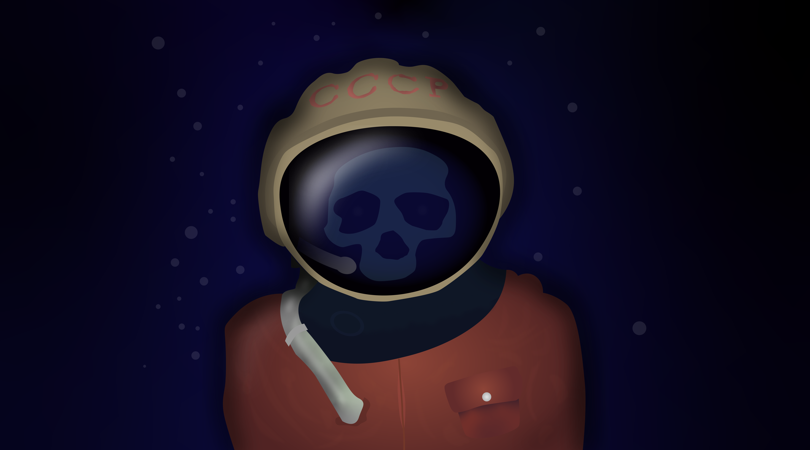

Art
Digital artwork

Applications of Digital Design 2025
Class Of 2027 Magazine Project Pages
Scholastics 2025
"Event Horizon"


Scholastics 2024
"Yellowstone Dream"
Scholastics 2022
"Cosmonaut"

Scholastics 2022
"Baran"
Scholastics 2022
"A Piece of the Universe"

Writing
Scholastics 2025
"South Fence" excerpt
Jose sighed as he got up, pulling on his overalls as he walked towards the door. He stopped before opening it and reached over the monitors, pulling his shotgun down by the barrel. He unhinged it swiftly, scanning its ammunition. Two silver shells gleamed inside each barrel, just as he had loaded them 3 days prior. He closed his weapon with a satisfied grunt.
Until the 20th century, accurately capturing life in a picture was rare. Even skilled painters who had decades worth of experience struggled to create truly lifelike portraits or paintings on a canvas. Today, you can capture any scene by pointing and clicking on your mobile phone. What if we had this technology sooner, perhaps in Ancient Greece? Battles like Thermopylae and Salamis could have been recorded rather than recounted by individuals speaking to early historians after the war. What if Columbus or Henry Hudson had cameras when they first set foot in the New World? There would be an element of permanence in each famous man’s actions and experiences.
Scholastics 2024
"Barnack's Vision" excerpt
Scholastics 2022
Pasteur's Cure
Louis Pasteur is known as one of the greatest scientists in history. His novel rabies vaccine saved millions of lives. However, Pasteur is also known for testing his cures on animals and humans. Was it ethical for him to use one child as a test subject if it could save the lives of millions? Overwhelmingly, the evidence shows that Pasteur made the right decision.